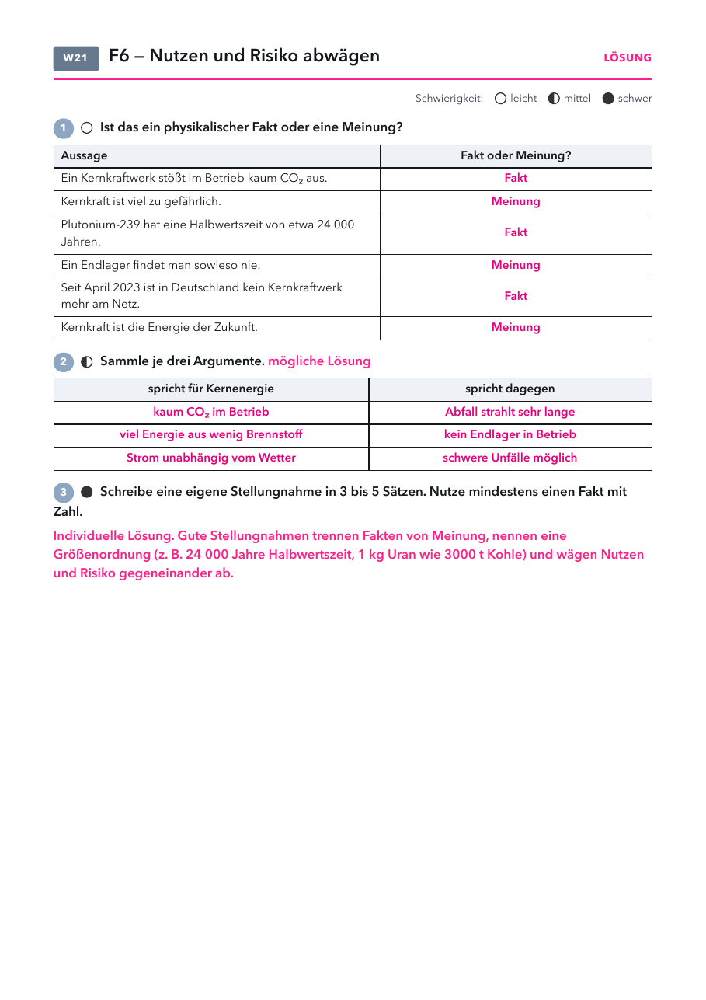

Klasse 10 · Physik · W21 (Woche ab 01.03.2027) · Abschluss Leitfrage 6
| Material | Anzahl | Hinweis |
|---|---|---|
| nicht nötig | ||
| Material | Anzahl | Hinweis |
|---|---|---|
| nicht nötig | ||

| Rolle | vertritt vor allem | typischer Satz |
|---|---|---|
| Energieversorger | sichere, bezahlbare Versorgung | Strom muss auch ohne Wind und Sonne fließen. |
| Umweltverband | Abfall und Unfallrisiko | Die nächsten tausend Generationen erben den Müll. |
| Bürgermeisterin eines möglichen Endlagerorts | Sicherheit der Bürger | Warum ausgerechnet bei uns? |
| Klimaforscher | CO₂ senken | Jede Tonne CO₂ zählt, egal woher. |
1) Wie lange soll hochradioaktiver Abfall in Deutschland nach der Einlagerung rückholbar bleiben?
2) Welche Aussage ist ein physikalisches Argument und keine Meinung?
Lösung: Fakt, Meinung, Fakt, Meinung, Fakt, Meinung. Argumente siehe Lösungsseite. Stellungnahme individuell.